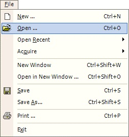
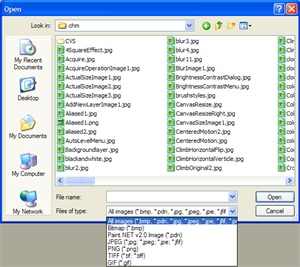

Open Operation
|  The Open Operation (File-->Open) clears the current canvas and opens a user-selected image for editing. If there is currently an active image, you will be prompted before it is cleared. |
|  This is a sample open dialog box. The supported file formats are: Bitmap (*.bmp), Paint.NET (*.pdn), Jpeg (*.jpg, *.jpeg, *.jpe and others), PNG (*.png), TIFF (*.tiff, *.tif), and GIF (*.gif). |